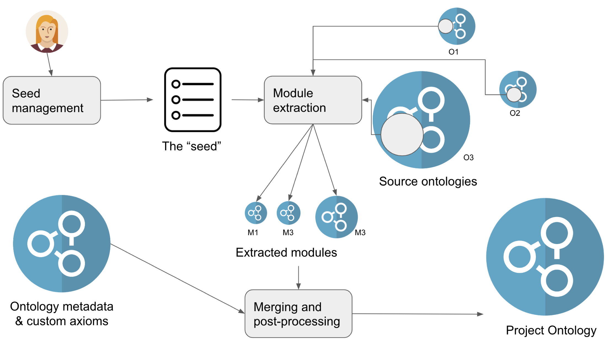

Project Ontology Development¶
Summary¶
A project ontology, sometimes and controversially referred to as an application ontology, is an ontology which is composed of other ontologies for a particular use case, such as Natural Language Processing applications, Semantic Search and Knowledge Graph integration. A defining feature of a project ontology is that it is not intended to be used as a domain ontology. Concretely, this means that content from project ontologies (such as terms or axioms) is not to be re-used by domain ontologies (under no circumstances). Project ontology developers have the freedom to slice & dice, delete and add relationships, change labels etc as their use case demands it. Usually, such processing is minimal, and in a well developed environment such as OBO, new project ontology-specific terms are usually kept at a minimum.
In this tutorial, we discuss the fundamental building blocks of application ontologies and show you how to build one using the Ontology Development Kit as one of several options.
Prerequisites¶
- A basic understanding of Ontology Pipelines using ROBOT is helpful to follow this tutorial.
Learning objectives¶
- Understand how to plan a project ontology project independent of any particular methodology
- Develop an application ontology using the Ontology Development Kit (ODK)
- Be aware off pitfalls when dealing with very large application ontologies
Table of Contents¶
- Why do we need project ontologies?
- Overview
- The three "ingredients" of project ontologies
- The five "phases" of project ontology development
Why do we need project ontologies?¶
There are a few reasons for developing project ontologies. Here are two that are popular in our domain:
- Semantic integration. You have curated a lot of data using standard ontologies and now you wish to access this data using the "semantic fabric" provided by the ontology. Concrete examples:
- Adding a "semantic layer to your knowledge graph". For example, your data is annotated using specific anatomy terms, and you wish to query your knowledge graph through anatomical groupings, such as "anatomical entities that are part of the cardio-vascular system".
- Offering "semantic search". For example, you may want to restrict a certain search widget to "diseases" only, or try to figure out whether a user is searching for phenotypes associated with diseases. A concrete example is populating a Solr or elastic-search index using not only the labels and synonyms of an ontology, but also their relationships. Try it: https://platform.opentargets.org/, https://monarchinitiative.org/.
- Example ontologies:
- https://github.com/monarch-initiative/phenio
- https://github.com/EBISPOT/efo
- https://github.com/EBISPOT/scatlas_ontology
- Natural language processing (NLP). You are developing an NLP application such as an annotator for text. Here, you may like to use ontologies to tag specific phrases in your documents, like those related to COVID. Ontologies in these cases serve essentially as more or less sophisticated dictionaries. But there are some more sophisticated uses of ontologies for NER.
- Example ontologies:
- https://github.com/berkeleybop/bero
- https://github.com/EBISPOT/covoc
- Mapping work. When developing mappings across ontologies and terminologies, it is often useful to have access to all of them at once. This helps to explore the consequences of mapping decisions, as well providing a single interface for ontology matching tools which usually operate on single ontologies. Advanced Machine Learning based approaches are used to generate graph embeddings on such merged ontologies. Example ontologies:
- https://github.com/monarch-initiative/mondo-ingest
Basic architecture¶

Three "ingredients" of project ontologies¶
Any application ontology will be concerned with at least 3 ingredients:
- The seed. This is a the set of terms you wish to import into your application ontology. The seed can take many forms:
- a simple list of terms, e.g.
MONDO:123, MONDO:231 - a list of terms including additional relational selectors, e.g.
MONDO:123, incl. all children - a list of terms including a logical selector,
MONDO:123, incl. all terms that are in some way logically related to MONDO:123 - a general selector, like "all classes" or simply "everything".
- There are probably more, but these are the main ones we work with in the context of biomedical application ontologies.
- The source ontologies, often referred to as "mirrors" (at least by those working with ODK). These are the full ontologies which we want to use in our application ontology. For example, we may want to include anatomical entities from the Uberon ontology into our application ontology. These are usually downloaded from the internet into the application ontology workspace, and then processed by the application ontology extraction workflow (see later).
- Additional ontology metadata and customisations, such as axioms used to connect entities (classes) across your source ontologies to fulfil a use case, but also your regular ontology metadata (title, comments, etc).
The five "phases" of project ontology development¶
There are five phases on project ontology development which we will discuss in detail in this section:
- Managing the seed
- Extracting modules
- Managing metadata and customisations
- Merging and post-processing
- Validation
There are other concerns, like continuous integration (basically making sure that changes to the seed or project ontology pipelines do not break anything) and release workflows which are not different from any other ontology.
Managing the seed¶
As described above, the seed is the set of terms that should be extracted from the source ontologies into the project ontology. The seed comprises any of the following:
- terms, such as
MONDO:0000001 - selectors, such as
all, children, descendants, ancestors, annotations - combinations of the two (a term with all its children)
Users of ODK will be mostly familiar with term files located in the imports directory, such as src/ontology/imports/go_terms.txt. Selectors are usually hidden from the user by the ODK build system, but they are much more important now when building project ontologies.
Regardless of which system you use to build your project ontology, it makes sense to carefully plan your seed management. In the following, we will discuss some examples:
- Using annotated data. For the Single Cell Atlas Ontology (SCAO) we already have a spreadsheet with the raw data, annotated with the ontology terms we wish to import. We only want to import these exact terms. Our strategy therefore is to extract the ontology terms from table and use these as our seed.
- User requests. For the Experimental Factor Ontology (EFO), we rely on user requests. Curators provide us with individual term requests, or lists of terms they need for curating their data. We usually include these terms along with their parents to maintain rich hierarchies.
- Use case specific considerations. For the Phenomics Integrated Ontology (PHENIO) we wish to combine all disease, phenotype and anatomy terms together and furthermore pull in related chemicals and biological processes (and more).
It makes sense to document your seed management plan. You should usually account for the possibility of changes (terms being added or removed) during the design phase.
Extracting modules¶
Module extraction is the process for selecting an appropriate subset from an ontology. There are many ways to extracting subsets from an ontology:
- Using logical modules (SLME, pronounced 'slime'): this will allow you to extract not only all the terms in your seed, but furthermore all logical axioms that could theoretically impact reasoning. SLME modules are typically much larger than what you would expect from a 'relevant' subset.
- Using ROBOT filter, a system to first select entities in your seed, then selectively including or excluding descendants, annotations.
- Using MIREOT, a technique that will extract terms and their subClass relationships, without any attempt to include other kinds of axioms.
You can consult the ROBOT documentation for some details on module extraction.
Let's be honest - none of these module extraction techniques are really ideal for project ontologies. SLME modules are typically used for domain ontology development to ensure logical consistency with imported ontologies, but otherwise contain too much information (for most project ontology use cases). ROBOT filter has a hard time with dealing with closures of existential restrictions: for example you cant be sure that, if you import "endocardial endothelium" and "heart" using filter, that the one former is still part of the latter (it is only indirectly a part) - a lot of research and work has being going on to make this easier. The next version of ROBOT (1.8.5) is going to contain a new module extraction command which will ensure that such links are not broken.
One of the design confusions in this part of the process is that most use cases of application ontologies really do not care at all about OWL. Remember, OWL really only matters for the design of domain ontologies, to ensure a consistent representation of the domain and enable reasoning-based classification. So it is, at least slightly, unsatisfactory that we have to use OWL tools to do something that may as well be done by something simpler, more akin to "graph-walking".
Managing metadata and customisations¶
Just like any other ontology, a project ontology should be well annotated according to the standards of FAIR Semantics, for example using the OBO Foundry conventions. In particular, project ontologies should be
- annotated with a title, a license, a description
- versioned and annotated with versionIRIs
- get associated with some PURL system (OBO Foundry often wont accept such ontologies, but other free options like https://w3id.org/ exist)
Furthermore, it is often necessary to add additional terms to the ontology which are not covered by other upstream ontologies. Here we need to distinguish two cases:
- The need to quickly add terms that belong somewhere else
- Adding terms that have no obvious home in any of your declared source ontologies.
With our OBO hat on, if you start adding terms "quickly", you should develop a procedure to get these terms into suitable upstream ontologies at a later stage. This is not so much a necessity as a matter of "open data ethics": if you use other people's work to make your life easier, its good to give back!
Lastly, our use cases sometimes require us to add additional links between the terms in our ontologies. For example, we may have to add subClassOf links between classes of different ontologies that cover the same domain. Or we want to add additional information. As with "quickly adding terms", if the information is generally useful, you should consider to add them to the respective upstream source ontology (synonyms of disease terms from Mondo, for example). We often manage such axioms as ROBOT templates and curate them as simple to read tables.
Merging and post-processing¶
Just like with most ontologies, the last part of the process is merging the various pieces (modules from external sources, customisations, metadata) together into a single whole. During this phase a few things can happen, but these are the most common ones:
- Merging: All separate parts are merged into one file.
- Restructure: Sometimes, we run additional processes to update the structure of the final ontology. One common post-processing step is to remove obsolete classes that may have come in during the extraction phase, add additional links between classes using approaches such as relation graph or prune away unsatisfiability-causing axioms such as disjointness axioms and negation. The latter is sometimes necessary when terms from multiple logically incompatible ontologies are imported.
- Annotate version information: owl:versionInfo and versionIRI annotations are added to the merged ontology.
Validation¶
One thing to remember is that you are not building a domain ontology. You are usually not concerned with typical issues in ontology engineering, such as logical consistency (or coherence, i.e. the absence of unsatisfiable classes). The key for validating an application ontology comes from its intended use case: Can the ontology deliver the use case it promised? There are many approaches to ensure that, chief among them competency questions. What we usually do is try to express competency questions as SPARQL queries, and ensure that there is at least one result. For example, for one of the project ontologies the author is involved with (CPONT), we have developed a synthetic data generator, which we combine with the ontology to ask questions such as: "Give me all patients which has a recorded diagnosis of scoliosis" (SPARQL). So the ontology does a "good job" if it is able to return, say, at least 100 patients in our synthetic data for which we know that they are diagnoses with scoliosis or one of its subtypes.
Frameworks for building project ontologies¶
The perfect framework for building project ontologies does not exist yet. The Ontology Development Kit (ODK) has all the tools you need set up a basic application ontology, but the absence of a "perfect" module extraction algorithm for this use case is still unsatisfactory. However, for many use cases, filter modules like the ones described above are actually good enough. Here we will go through a simple example.
An alternative framework for application ontology development based on a Web User Interface and tables for managing the seed is developed by James Overton at (ontodev).
Another potential alternative is to go all the way to graph-land and build the application ontology with KGX and LinkML. See here for an example. Creating a project ontology this way feels more like a Knowledge Graph ETL task than building an ontology!
Example application ontology with ODK¶
Set up a basic ODK ontology. We are not covering this again in this tutorial, please refer to the tutorial on setting up your ODK repo.
Dealing with large imports¶
Many of the larger imports in application ontologies do not fit into the normal GitHub file size limit. In this cases it is better to attach them to a GitHub release rather than to check them into version control.
TBD
Additional materials and resources¶
- TBD